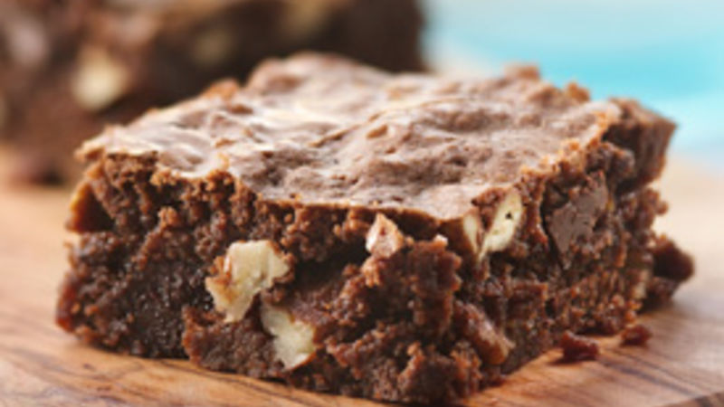

Brownies

Description
These brownies are a perfect mix of intense dark chocolate flavor and deliciously crunchy pecan nuts. Ready to bake in only 15min, these fudgy treats will delight all chocolate lovers, and leave you wanting more!
Ingredients
- 200g dark chocolate (min. 65% cocoa)
- 160g butter + extra for the baking sheet
- 100g pecan nuts
- 4 eggs
- 160g brown sugar
- 160g ground almonds
Steps
- Preheat the oven at 170°C
- Lighlty roast the pecan nuts for 7 minutes
- Melt the chocolate together with the butter (cut up in dice)
- Beat the eggs for 1 minute
- Add the sugar, and mix gently using a wooden spoon
- Add the ground almonds, and mix thoroughly with the wooden spoon
- Add the molten chocolate to the mix, and beat the mixture for 1 minute
- Crush the roasted pecan nuts and add them to the mix
- Transfer the mix to a well-buttered baking sheet
- Bake in the oven for 18 to 20 minutes
- Let the brownies cool down at room temperature for 1 hour